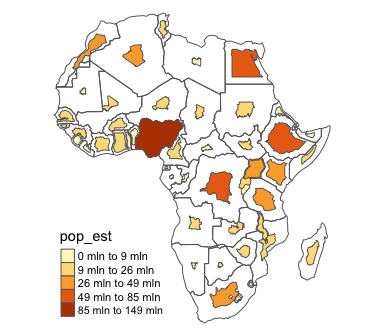
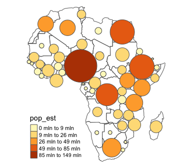

Construct a continuous area cartogram by a rubber sheet distortion algorithm (Dougenik et al. 1985), non-contiguous Area Cartograms (Olson 1976), and non-overlapping Circles Cartogram (Dorling el al. 1996) in R.
Installation
You can install the cartogram package from CRAN as follows:
install.packages("cartogram")To upgrade to the latest development version of cartogram, install the package devtools and run the following command:
devtools::install_github("sjewo/cartogram")Examples
Continuous Area Cartogram
library(cartogram)
library(sf)
#> Linking to GEOS 3.11.0, GDAL 3.5.3, PROJ 9.1.0; sf_use_s2() is TRUE
library(tmap)
data("World")
# keep only the african continent
afr <- World[World$continent == "Africa", ]
# project the map
afr <- st_transform(afr, 3395)
# construct cartogram
afr_cont <- cartogram_cont(afr, "pop_est", itermax = 5)
# plot it
tm_shape(afr_cont) + tm_polygons("pop_est", style = "jenks") +
tm_layout(frame = FALSE, legend.position = c("left", "bottom"))
Non-contiguous Area Cartogram
Many thanks to @rCarto and @neocarto for contributing the code!
# construct cartogram
afr_ncont <- cartogram_ncont(afr, "pop_est")
# plot it
tm_shape(afr) + tm_borders() +
tm_shape(afr_ncont) + tm_polygons("pop_est", style = "jenks") +
tm_layout(frame = FALSE, legend.position = c("left", "bottom"))
Non-Overlapping Circles Cartogram
Many thanks to @rCarto for contributing the code!
# construct cartogram
afr_dorling <- cartogram_dorling(afr, "pop_est")
# plot it
tm_shape(afr) + tm_borders() +
tm_shape(afr_dorling) + tm_polygons("pop_est", style = "jenks") +
tm_layout(frame = FALSE, legend.position = c("left", "bottom"))
References
- Dorling, D. (1996). Area Cartograms: Their Use and Creation. In Concepts and Techniques in Modern Geography (CATMOG), 59.
- Dougenik, J. A., Chrisman, N. R., & Niemeyer, D. R. (1985). An Algorithm To Construct Continuous Area Cartograms. In The Professional Geographer, 37(1), 75-81.
- Olson, J. M. (1976), Noncontiguous Area Cartograms. The Professional Geographer, 28: 371–380. doi:10.1111/j.0033-0124.1976.00371.x